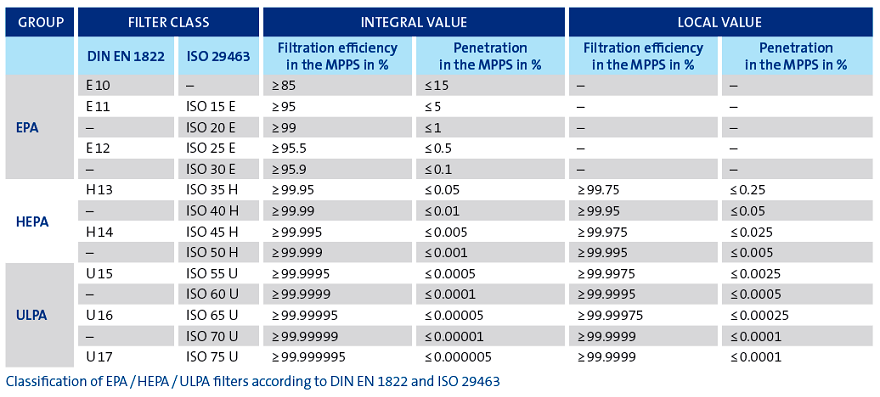

Adaptación de la calculadora original creada por:
Joseph Allen ,
Jose Cedeno-Laurent
del Instituto de Salud Publica de Harvard T.H. Chan Y
Shelly Miller
y la Universidad de Colorado Boulder:
https://docs.google.com/spreadsheets/d/1NEhk1IEdbEi_b3wa6gI_zNs8uBJjlSS-86d4b7bW098/edit#gid=1882881703
* Lea todas las asunciones científicas en la página ReadMe de dicha calculadora.
Preguntas frecuentes sobre cómo protegerse de la transmisión de aerosol
COVID-19 (ver sección 9 para Filtrado y Limpieza de Aire)
https://translate.google.com/translate?hl=en&sl=en&tl=es&u=https%3A%2F%2Fdocs.google.com%2Fdocument%2Fd%2Fe%2F2PACX-1vTgVkamic82Ux90zCWb5NFC6gYcDSWKYxKgh2y49uHQ5OJfGBAuQXs8igbmOaGqODI9wJ0UUnpo1dZu%2Fpub
Hilo sobre filtros HEPA y otros sistemas alternativos de filtrados escrito por José Luis Jiménez (experto mundial en aerosoles), traducido y ampliado por Pablo Fuente: https://threader.app/thread/1292140276467802117
Hilo sobre Bulos sobre los filtros HEPA escrito por José Luis Jiménez (experto mundial en aerosoles): https://threader.app/thread/1313133739036217348
La normativa EN 1822-1:2009 de prueba de filtro europea es la base más importante para probar y clasificar los filtros absolutos. La norma se basa en la vanguardista tecnología de medición de partículas y en los procedimientos autorizados para determinar la eficiencia energética. Consta de cinco partes. Al filtro se le asigna la clase de filtro correspondiente empleando los resultados de las secciones 4 (eficacia local) y 5 (eficacia integral).
Se generan un informe de prueba individual y un número de serie para los filtros de las clases H13 y superiores. Por lo tanto, se puede asignar a cada filtro a partir de H13 su prueba individual.
La EN 1822-1:2009 establece tres grupos:
Los filtros absolutos se clasifican según los valores de eficacia locales e integrales que se determinan durante la prueba.
Esta parte describe las condiciones de prueba y los generadores de aerosol, la tecnología de medición de partículas y los procedimientos estadísticos para evaluar los recuentos.
* La eficacia integral es el valor medio de todas las eficacias locales sobre el área frontal del filtro.En la primera fase de esta norma EN 1822 se evaluará el rendimiento fraccionario para las medidas de filtración listas a la misma velocidad que en el filtro. El propósito es determinar el tamaño de partículas a la cual la media ofrece la eficacia de retención más baja que se denomina: Tamaño de Partícula de Mayor Penetración (MPPS).
La parte 3 describe la determinación de la eficiencia fraccional y la determinación del tamaño de partícula más penetrante (MMPS) del medio filtrante de lámina plana.
Se aplica un aerosol de prueba al medio filtrante a la velocidad de flujo nominal especificada para el uso posterior del filtro. Los flujos parciales del aerosol de prueba se dirigen hacia arriba y hacia abajo en la muestra del filtro. El método de recuento de partículas determina las concentraciones de partículas y calcula la curva de eficiencia fraccional. El tamaño de partícula en el que la curva de eficiencia fraccional alcanza su punto más bajo se llama el MPPS. En términos más sencillos, este es el tamaño de partícula con el que un medio filtrante trabaja peor para una velocidad de flujo definida.
Esta sección trata sobre cómo probar que los filtros no tienen fugas. Pueden producirse fugas debido a fallas en el medio filtrante, a un sellado inadecuado entre el conjunto de pliegues y el marco o a irregularidades en el manejo de los componentes. Debido a la elevada eficiencia de filtración estimada para los filtros absolutos, incluso la más mínima fuga (apenas visible para el ojo humano) puede producir mayores concentraciones de partículas locales.
Para el proceso automatizado (prueba de escáner), el elemento filtrante se coloca en un banco de ensayos y luego se aplica un aerosol de prueba de DEHS (di-2-etilhexil sebacato). El tamaño medio de la partícula del aerosol debe estar en el rango del MPPS. La aproximación del lado del flujo del filtro se realiza empleando sondas con un eje lineal controlado por ordenador. En cada punto del lado del aire limpio se miden las concentraciones locales de aerosol para fijar el grado de penetración local. Si la concentración de aerosol no supera el límite establecido en ningún punto, se considera que el filtro no presenta fugas.
La necesidad de determinar las eficiencias locales también implica la necesidad de realizar pruebas individuales para cada elemento del filtro de las clases de filtro superiores a H13.
La parte 5 describe la determinación de la eficiencia del filtro integral. Este valor suele calcularse como la media de las eficiencias individuales locales que se han medido en la parte 4. De manera alternativa, también se permite una medición individual con sondas de muestreo fijas.